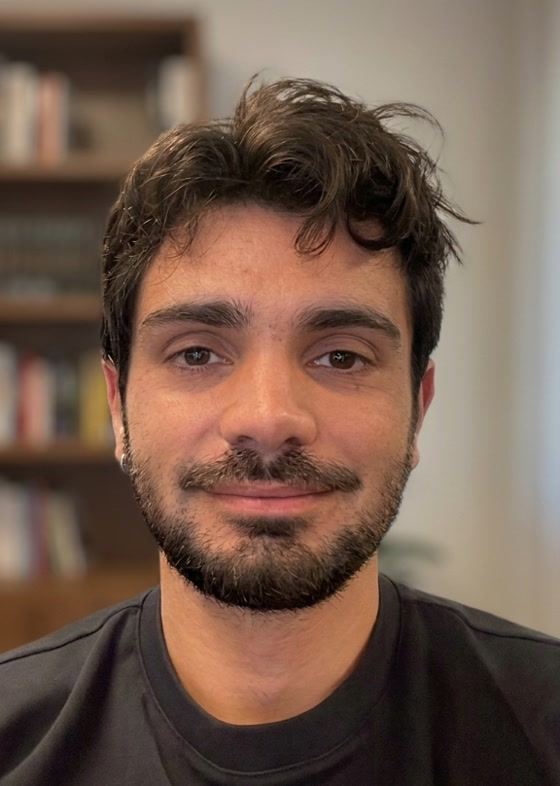

Armand Comas Massagué

At Google XR, on the Syntec team, I work on leveraging multi-modal generative models to synthesize the world in 3D. Before that, I studied the structure underneath generation: how to interpret, manipulate, and compose representations for greater control of the generative process, during my PhD with Octavia Camps at Northeastern University's Robust Systems Lab. Along the way, I collaborated with Google XR, Adobe (Project Indigo, with Mark Levoy), Netflix, MERL, and MIT (with Yilun Du and Joshua Tenenbaum), with a research stay at UPenn (with René Vidal).
Google XR · Syntec
industry · academia
Mentored 4 M.Sc. theses and 5 incoming Ph.D. students · Northeastern Dean's Fellowship · Catalan, Spanish, English